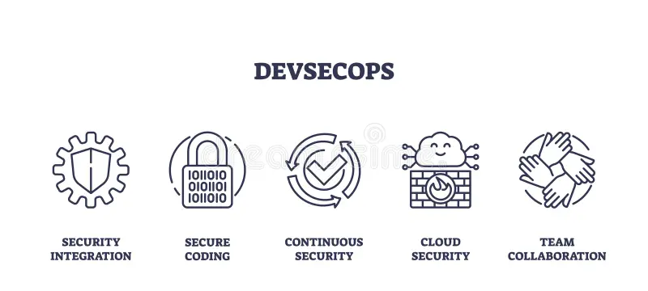

Scalable DevSecOps Solutions for Startups
We help you bulid automated and secure infrastructure to launch your projects faster and grow with confidence.
How DevOps is Transforming Modern Development
DevSecOps Trends 2025: What’s Hot and What’s Not
As we progress into 2025, DevSecOps continues its ascent—but not every trend delivers equal value. This article explores what’s gaining true momentum, and which outdated practices you can safely leave behind.
Hot Trend: AI-Augmented Threat Detection
AI and ML models now sift through vulnerability feeds and runtime logs, adding critical context to threat alerts. Datadog reports that prioritizing vulnerabilities using runtime metadata improves remediation efficiency by over 30% :contentReference[oaicite:8]{index=8}.
StrongDM’s findings show 96% of teams believe automated security accelerates compliance :contentReference[oaicite:9]{index=9}. Deploying AI-powered triage tools significantly reduces alert fatigue and boost security confidence.
Hot Trend: Shift‑Left Security & GitOps Integration
Embedding security at pull request time via SAST, SCA, and Policy-as-Code gates is now standard. Datadog finds guardrails in software supply chain reduce long-lived credential leaks and improve patching frequency :contentReference[oaicite:10]{index=10}.
GitOps is now mainstream—64% of companies use FluxCD or ArgoCD, reducing rollback rates by 81% :contentReference[oaicite:11]{index=11}. Automating policy validation before deployment ensures secure manifests in production.
Hot Trend: Minimal Container & IaC Hardening
Minimal container images—stripped of unnecessary components—are proven to reduce vulnerabilities. Datadog highlights that container layer reductions directly improve security posture :contentReference[oaicite:12]{index=12}.
Meanwhile, 2025 is seeing expanded Infrastructure-as-Code usage—but ClickOps (manual console changes) still persist :contentReference[oaicite:13]{index=13}. Enforcing IaC scanning and auditing remains essential.
What’s Losing Steam: Tool Sprawl Without Automation
Though DevSecOps tool choice has exploded, many teams suffer from tool fatigue. StrongDM reports 60% find implementation technically challenging; 40% cite cost; 38% mention inertia :contentReference[oaicite:14]{index=14}.
Rather than adopting every solution, focus on a lean stack integrating SAST, SCA, IaC scanning, and runtime protection—connected by automated pipelines—to reduce complexity and cost.
What’s Fading: Manual CI/CD Security Gatekeeping
Manual gates and unstructured approvals are outdated. Datadog recommends automating scans and enforcing policy-based blocking to reduce credential misuse and improve patch cadence :contentReference[oaicite:15]{index=15}.
In 2025, only builds passing automated SAST/IaC/SCA pipelines should reach production; manual reviews continue only for design-level checks.
Key Statistics at a Glance
- 96% say automation boosts compliance :contentReference[oaicite:16]{index=16}
- 60% find DevSecOps technically challenging; 40% report high cost; 38% see inertia :contentReference[oaicite:17]{index=17}
- 64% adopt GitOps → reduced rollback by 81% :contentReference[oaicite:18]{index=18}
- 64%+ prioritize runtime context in vulnerability management :contentReference[oaicite:19]{index=19}
“Focus on automation and context over tool quantity—smart integrations propel DevSecOps forward in 2025.”
To stay ahead, prioritize tools that automate, contextualize, and integrate. Step back from tool sprawl and manual gates—embracing high-value practices ensures your DevSecOps effort remains secure, efficient, and future-ready.